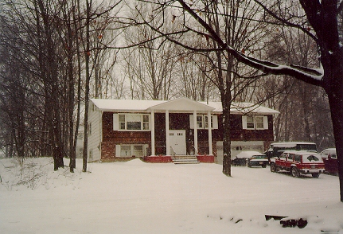

私の家・冬 (96.1)
風景

|
私がここに留学して来たのは９４年７月。２９歳の時です。寮（ドミトリー）に２ヶ月間住みました。夏だったこともあり、人は少なく、ひとり部屋をもらうことができました。ヨーロッパからの語学留学生も来ていて、寮の中はいつもにぎやか。毎日のようにどこかでパーティがあり、私もよく誘われました。わりと楽しかったのですが、私は最初から寮をでるつもりでいました。年齢的に学生にはあまり興味がなく、一人でいろいろやってみたかったのです。 とは言ってもなかなか見つかりません。というのは、自分でもどういう風に住んでみたいのかはっきりわかっていなかったからです。一人で住んでみたい、ルームメートを持ちたい、アメリカ人の家庭に住みたい、、、そして結局、同じ寮にいた韓国人の女の子が声をかけてくれて、一緒に住むことにしました。１ベッドルームのアパートをシェアすることになったのです。でもこれは実際、失敗に終わりました。私は一部屋もらっていたのですが、彼女がリビングに住んでいたため気を遣わなければならなかったこと、そのため朝早くとか夜遅くに友達を呼べなかったこと、そして何よりも彼女はものすごい無口で、ほとんどおしゃべりできなかったこと。ここには８ヶ月間住みました。 次もまたアパート。今度はクラスメートの紹介です。台湾人の彼女はボーイフレンドとハウスメートの３人で住んでいましたが、彼女が帰国するので次に入る人を探していました。「自分のボーイフレンドと私が住むのは嫌じゃないの？」って聞いたら、「恵子なら安心だ」ですって。。どうして(?_?）。。。彼らとはそのアパートの契約が切れる１２月まで、６ヶ月間一緒に住みました。この頃、私は自分の留学が長くなる、、、と思いはじめていたので、３人で安く住めたことはラッキーでした。中国人同士のお金のトラブルの話はよく聞いていたのですが、彼らはこわいくらいきちんとしていて、切手一枚もきちんと３人で分けました。「それくらいは私が出すよ」と言っても「だめ、あとでトラブルが起きる」って。だいたいにおいてうまく行きましたが、問題が一つ。二人はとても仲が悪かったのです。何があってもすべて私を通しました。たまに食事を一緒に作っても私とどちらかは一緒に食べますが、３人で食べることは一度もありませんでした。それがちょっと残念でした。せっかくだから仲良くやりたかったのですけど。 そして契約が切れ、忘れもしない、９５年１２月２５日、私たちはアパートを引き払うことになりました。ところが私はなんと、予定していた次の家に入る３日前にキャンセルされてしまったのです。（これには理由がありますが、それはまたの機会に。）トラブルの後、私はまったく行くところがなくなり、１２月２４日のクリスマスイブの日の夜、せめて荷物を置く場所を探すべく、電話をかけまくり、車で走り回っていたのです(;o;)。 結局私はこの時、２回引越しをしました。２週間だけ住ませてもらった家を引き払い、現在の家、下の写真の家に住むことができるようになったのです(^-^)。アメリカ人のオーナーのダグラス、娘のケィティと他にハウスメートが二人。私は鍵つきの一部屋をもらい、電話、テレビは専用線で、バス・トイレ、キッチンはみんなと共同です。ダグラスは娘が高校生なので悪影響を考え、女性しか住まわせず、私たちは夜、人を泊めてはいけないことになっています。おかげでとても静かです。ハウスメートは私がここに来た時からいた台湾人のかわいいキティ、最近入ってきたばっかりのプエルトリコからきたジャクリンです。今までのつらかったことが嘘のように楽しく１年が過ぎました。日本に帰国する日までここに住まわせてもらいたいと思っています。 「引越し」はアメリカ人にとってさえ、ストレスのトップ１０に入るそうです。確かにすべてがうまく行くことは滅多にありません。私もいくつもの引越しを経験し、嫌な思いもして、やっと素敵な家を見つけました(^-^)。ちょっと古いのがたまに傷かな。ダグラスがいつもあちこち直しています。真ん中が私の部屋です。今もこの部屋の中でこれを書いているのですよ。(^^)/-☆ |

=私の家(96.1)=
[ホームへ] [写真一覧へ]